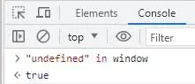

2024-07-14 09:02:59 · YinHao
在很多大厂的规范里面，有这么一条规定：不让直接使用 undefined 关键字，而应该使用 void 0 来替代 undefined。
void 是一个关键字，他后面跟的是一个表达式，不管这个表达式算的是啥，后面随便写个东西，最终整个表达式返回一个 undefined；比如 void 123456; 最终结果返回的都是 undefined；在 void 后面随便写个 0 1 2 啥的都无所谓，只是习惯统一写个 0；让这个东西来替代书写 undefined。
其实之所以有这个规定，是因为这个 undefined 本身就是一个 bug。为什么呢？见下图
定义变量的时候变量名不能为 true、null 等，但是可以定义为 undefined；
这是为啥？是因为 undefined 他在一个环境里边压根就不是一个关键字，他是全局对象 window 里边的一个属性
从图中可以看到 undnfined 确实在全局对象 window 中。这是一些历史问题，但是现在解决不了了。
var undefined = 10;
// undefined
console.log(undefined);
比如定义一个变量 undefined 的值为 10，然后去读这个 undefined，最后结果还是 undefined；这是因为这个 undefined，它虽然说是 window 的一个属性，但是这个属性是只读的，无法更改，更改为别的值他的属性值还是 undefined。
上面这个是全局环境，那要是不在全局环境呢，比如在一个函数里面
function fn() {
var undefined = 10;
// 10
console.log(undefined);
}
fn();
上面代码可以看到在函数里边定一个一个变量 undefined 的值为 10；来打印一下这个 undefined，这里输出结果为 10，是因为这里使用不到全局的 undefined 了，用到的是局部的 undefined 了。
这一点就会给程序埋下隐患，中小型企业不在乎无所谓，那谁会写这种代码呢，但是在大企业里边哪怕一些几率很低的事件，但他一旦发生了造成的损失是难以估量的，所以像这些隐患他能够规避就尽量规避，那怎么来规避呢，就是那条规则，当你要得到一个 undefined 值的时候应该使用的是 void 0，而不是 undefined 本身。
function fn() {
var undefined = 10;
// undefined
console.log(void 0);
}
fn();
这样就不会有问题了，哪怕定义的变量名字就为 undefined，也不会实际的影响要使用 undefined 的地方，比如要返回一个 undefined 就写 return void 0；